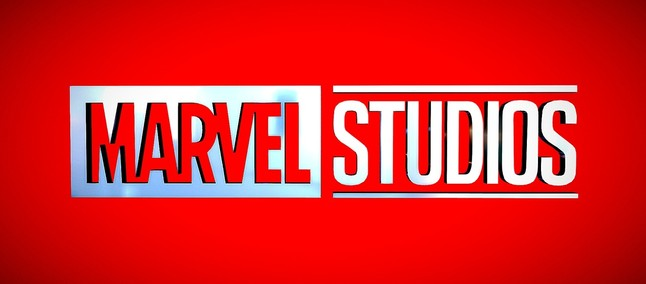

A MARVEL ENTERTAINMENT
A Marvel Entertainment foi fundada em 1939, nos Estados Unidos, por Martin Goodman. A primeira revista em quadrinhos da companhia foi a Marvel Comics 31 de agosto de 1939, quando apareceu o personagem Tocha Humana e Namor. A história da empresa, no entanto, teve início em 1933, quando houveram as primeiras publicações na revista Western Supernovel Magazine.

Ao longo dos anos, a Marvel enfrentou altos e baixos, mas no início dos anos 1990, a companhia cresceu rapidamente, com a popularização das HQs nos Estados Unidos. Foi na mesma década que os personagens da empresa ganharam licença para o cinema, ganhando prestígio com filmes como X-Men, X-Men Origins: Wolverine, Homem-Aranha, Quarteto Fantástico, Hulk, Homem de Ferro e Blade.
Em 2009, a Marvel foi comprada pela Walt Disney Company, consagrando-se pela produção de enormes sucessos de bilheteria nos cinemas, incluindo Homem de Ferro 2, Thor e Captain America: The First Avenger. Hoje, a Marvel é uma das maiores empresas de entretenimento do mundo, com mais de 8 mil personagens em seu catálogo.